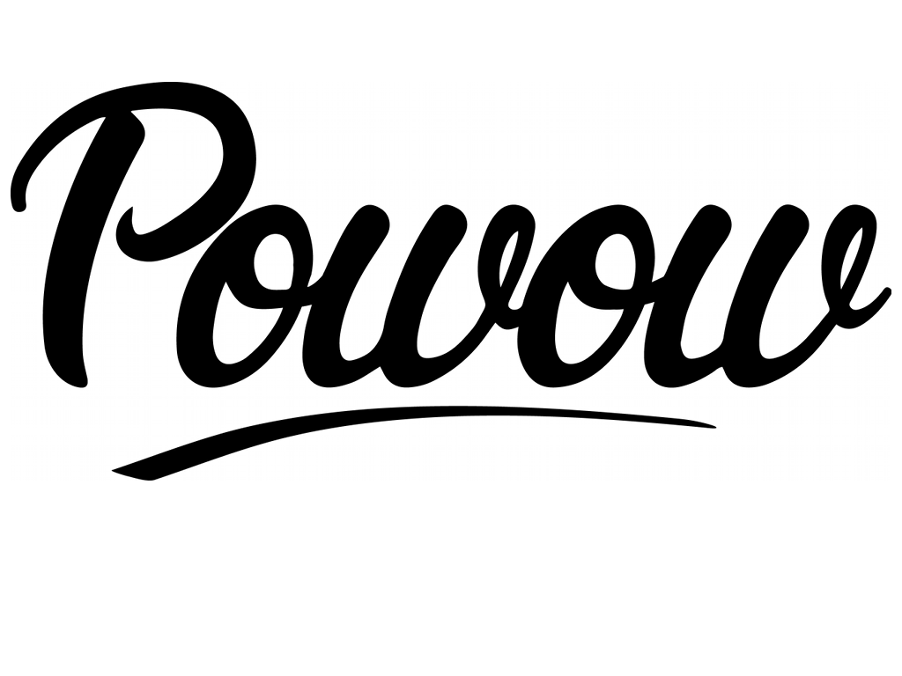

<title>More Ruby than Ruby</title>

<section>
<h1><span class="ruby">More Ruby</span> than <span class="ruby">Ruby</span></h1>
<footer><a href="http://adam.pohorecki.pl/">Adam Pohorecki</a > - 06.08.2013 @ <a href="http://www.meetup.com/Krakow-Ruby-Users-Group/">KRUG</a></footer>
</section>

<section>
<h1>My <span class="clojure">Cunning</span> Plan</h1>
</section>

<section>
<h1>I <span class="love"></span> Ruby</h1>
</section>

<section>
<figure>

</figure>
</section>

<section>
<h1><span class="clojure">Clojure </span> &gt; <span class="ruby">Ruby</span></h1>
</section>

<section>
<ul class="bullets incremental">
  <li>Dynamic</li>
  <li>Functional</li>
  <li>LISP</li>
  <li>on the JVM</li>
</ul>
<footer>What is <span class="clojure">Clojure</span>?</footer>
</section>

<section>
<script lang="clojure">
(println "Hello," (+ 1 2 3) "!")
</script>

<script lang="ruby">
puts "Hello, #{1 + 2 + 3}!"
</script>
<footer>Obligatory Hello World</footer>
</section>

<section>
<script lang="clojure">
(defn greet [name]
  (println "Hello," name "!"))

; same as
(def greet (fn [name]
  (println "Hello," name "!")))
</script>

<script lang="ruby">
def greet(name)
  puts "Hello #{name}!"
end
</script>
<footer>Function definition</footer>
</section>

<section>
<script lang="clojure">
(def a-list '(1 2 3 4))
(def a-vector [1 2 3 4])
(def a-map {:foo 1 :bar 2 :baz 3})
(def a-set #{:foo :bar :baz})
(def a-regex #"\s+")
(def anonymous-function #(* % %))
</script>

<script lang="ruby">
an_array = [1, 2, 3, 4]
a_map = {foo: 1, bar: 2, baz: 3}
a_regex = /\s+/
a_proc = proc{ |x| x * x }
</script>
<footer>Data structures</footer>
</section>

<section>
<h1><span class="love"></span> :keywords</h1>
</section>

<section>
<script lang="ruby">
# keyword args
render text: "Hello world!"

# hash lookup
session[:current_user_id]

# fast comparison
[:admin, :moderator].include?(user.role)

# referencing methods by name
before_filter :assign_current_user
</script>
<footer>:keywords in <span class="ruby">Ruby</span></footer>
</section>

<section>
<script lang="clojure">
; keyword args
(render :text "Hello world!")

; hash lookup
(session :current_user_id)

; fast comparison
(#{:admin :moderator} user-role)

; directly referencing functions
(before_filter assign_current_user)
</script>
<footer>:keywords in <span class="clojure">Clojure</span></footer>
</section>

<section>
<script lang="clojure">
; keywords as functions
(:current_user_id session)

; namespaced keywords
(env :authlogic/current-user)
(env ::current-user)

; symbols
(eval '(+ x y))

; metadata on symbols
(defn ^{:author "Adam"} foo [])
(:author (meta #'foo)) ; => "Adam"
</script>
<footer><span class="clojure">Clojure</span> &gt; <span class="ruby">Ruby</span></footer>
</section>

<section>
<h1><span class="love"></span> Enumerable</h1>
</section>

<section>
<script lang="ruby">
[1, 2, 3].map { |x| x * x } # = [1, 4, 9]

[1, 2, 3].reduce(:+) # = 6

[1, 2, 3].find(&:odd?) # = 1

[1, 2, 3].select(&:odd?) # = [1, 3]

["aaa", "bb", "c"].sort_by(&:length)
# = ["c", "bb", "aaa"]
</script>
<footer>Enumerable in <span class="ruby">Ruby</span></footer>
</section>

<section>
<script lang="clojure">
(map #(* % %) [1 2 3]) ; => (1 4 9)

(reduce + [1 2 3]) ; => 6

(first (filter odd? [1 2 3])) ; => 1

(filter odd? [1 2 3]) ; => [1 3]

(sort-by count ["aaa" "bb" "c")
; => ["c" "bb" "aaa"]
</script>
<footer>"Enumerable" in <span class="clojure">Clojure</span></footer>
</section>

<section>
<script lang="clojure">
; lazy
(def natural-numbers (iterate inc 0))
(def primes (filter prime? natural-numbers))
(nth primes 10) ; => 29

; not limited by object orientation
(map * [1 2 3] [4 5 6] [7 8 9])
; => [28 80 162]
</script>
<footer><span class="clojure">Clojure</span> &gt; <span class="ruby">Ruby</span></footer>
</section>

<section>
<h1><span class="love"></span> blocks</h1>
</section>

<section>
<script lang="ruby">
in_transaction do
  bob.transfer(10, to: alice)
end
</script>

<script lang="ruby">
def in_transaction
  transaction = Transaction.start
  yield
  transaction.commit
rescue => e
  transaction.rollback
end
</script>
<footer>Custom control structures in <span class="ruby">Ruby</span></footer>
</section>

<section>
<script lang="clojure">
(in-transaction'
  (fn [] (transfer 10 :from bob :to alice)))
</script>

<script lang="clojure">
(defn in-transaction' [block]
  (try
    (let [t (start-transaction)]
      (block)
      (commit t))
    (catch Exception e (rollback t))))
</script>
<footer>Custom control structures in <span class="clojure">Clojure</span></footer>
</section>

<section>
<script lang="clojure">
(in-transaction
  (transfer 10 :from bob :to alice))
</script>

<script lang="clojure">
(defmacro in-transaction [& forms]
  `(in-transaction' (fn [] ~@forms)))
</script>
<footer>Custom control structures in <span class="clojure">Clojure</span> contd.</footer>
</section>

<section>
<script lang="clojure">
; multi-block control structures
(in-transaction
  (transfer 10 :from bob :to alice)
  (otherwise
    (log "ZOMG!")))
</script>
<footer><span class="clojure">Clojure</span> &gt; <span class="ruby">Ruby</span></footer>
</section>

<section>
<h1><span class="love"></span> method_missing</h1>
</section>

<section>
<script lang="ruby">
@people = ...
xml = XMLBuilder.build do
  people do
    @people.each do |p|
      person(name: p.name) do
        address do
          street { p.street }
          city { p.city }
        end
      end
    end
  end
end
</script>
<footer>XML Builder in <span class="ruby">Ruby</span></footer>
</section>

<section>
<script lang="clojure">
(def people ...)

(build-xml
  [:people
    (map (fn [p]
      [:person {:name (:name p)}
        [:address
          [:street (:street p)]
          [:city (:city p)]]])
    people)])
</script>
<footer>XML Builder in <span class="clojure">Clojure</span></footer>
</section>

<section>
<script lang="clojure">
; data is easier to manipulate than code
(def data
  [:people
    [:person {:name "John"}]
    [:person {:name "Bob"}]])

(defn capitalize-names [data] ...)
(defn remove-address [data] ...)
(defn add-ns-to-tags [data] ...)
</script>
<footer><span class="clojure">Clojure</span> &gt; <span class="ruby">Ruby</span></footer>
</section>

<section>
<h1><span class="love"></span> Modules</h1>
</section>

<section>
<script lang="ruby">
module Animal
  def feed(food)
    raise "BARF!" unless can_eat?(food)
    eat(food)
  end

  def eat(food)
  end

  def can_eat?(food)
    false
  end
end
</script>
<footer>Modules in <span class="ruby">Ruby</span></footer>
</section>

<section>
<script lang="ruby">
module Herbivore
  def can_eat?(food)
    food.vegetable?
  end
end

class Horse
  include Animal
  include Herbivore

  def eat(food)
    puts "crunch, crunch"
  end
end
</script>
<footer>Modules in <span class="ruby">Ruby</span> contd.</footer>
</section>

<section>
<script lang="clojure">
(defn feed [animal food]
  (if (can-eat? animal food)
    (eat animal food)
    (throw (Exception. "BARF!")))

(defprotocol Eater
  (can-eat? [animal food])
  (eat [animal food]))

(defn herbivore [_ food]
  (= :vegetable (:food-type food)))
</script>
<footer>Modules in <span class="clojure">Clojure</span></footer>
</section>

<section>
<script lang="clojure">
(defrecord Horse [name]
  Eater
  (can-eat? [self food]
    (herbivore self food))
  (eat [_ _]
    (println "crunch, crunch")))
</script>
<footer>Modules in <span class="clojure">Clojure</span> contd.</footer>
</section>

<section>
<script lang="clojure">
; no conflict
(db/save brave-knight db-connection)
(game-actions/save brave-knight princess)
</script>

<script lang="ruby">
# name conflict
class BraveKnight
  include DatabaseRecord # save(db)
  include Playable # save(princess)
end
</script>
<footer><span class="clojure">Clojure</span> &gt; <span class="ruby">Ruby</span> (the expression problem)</footer>
</section>

<section>
<script lang="clojure">
(defmulti can-eat?
  (fn [& args] (map ::type args)))

(defmethod can-eat? [::animal ::food]
  [_ _] false)

(derive ::herbivore ::animal)
(derive ::horse ::herbivore)
(derive ::vegetable ::food)
(derive ::tomato ::vegetable)

(defmethod can-eat?
  [::herbivore ::vegetable]
  [_ _] true)
</script>
<footer><span class="clojure">Clojure</span> &gt; <span class="ruby">Ruby</span> (multi-arg polymorphism)</footer>
</section>

<section>
<h1><span class="love"></span> Open Classes</h1>
</section>

<section>
<script lang="ruby">
# activesupport/core_ext/...
class String
  def constantize
    # ...
  end
end
</script>

<script lang="ruby">
# your code
"Foo::Bar".constantize
</script>
<footer>Open Classes in <span class="ruby">Ruby</span></footer>
</section>

<section>
<script lang="clojure">
(ns activesupport)

(defn constantize [s] ...)
</script>

<script lang="clojure">
(ns my-code
  (:use
    [activesupport :only [constantize]]))

(constantize "Foo::Bar")
</script>
<footer><span class="clojure">Clojure</span> &gt; <span class="ruby">Ruby</span></footer>
</section>

<section>
<h1><span class="love"></span> Duck Typing</h1>
</section>

<section>
<script lang="ruby">
class NetworkLogger
  def log(msg); end
end

class NullLogger
  def self.log(msg); end
end

def handle_request(env, logger)
  logger.log("request #{env[:method]}")
end
</script>
<footer>Duck Typing in <span class="ruby">Ruby</span></footer>
</section>

<section>
<script lang="clojure">
(defn log-to-network [msg] ...)
(defn dont-log [msg])

(defn handle-request [env log]
  (log (str "request" (:method env))))
</script>
<footer>Duck Typing in <span class="clojure">Clojure</span></footer>
</section>

<section>
<h1><span class="love"></span> Web Apps</h1>
</section>

<section>
<h1><span class="clojure">Clojure</span>Script</h1>
</section>

<section>
<h1>There's <span class="clojure">more</span>...</h1>
</section>

<section>
<ul class="bullets incremental">
  <li>Concurrency</li>
  <li>Performance</li>
  <li>Smaller abstractions</li>
  <li>...</li>
</ul>
<footer><span class="clojure">Clojure</span> &gt; <span class="ruby">Ruby</span></footer>
</section>

<section>
<h1>Programming language to learn <span class="clojure">this year</span>?</h1>
</section>

<section>
<ul>
  <li>
  <a href="http://www.4clojure.com/">4Clojure</a>
  </li>
  <li>
  <a href="http://blog.milehighcode.com/2011/12/my-clojure-reading-list.html">Clojure Books</a>
  </li>
  <li>
  <a href="http://alexott.net/en/clojure/video.html">Clojure Videos</a>
  </li>
  <li>
  <a href="https://leanpub.com/fp-oo">Functional Programming for Object Oriented Programmer</a>
  </li>
</ul>
<footer>Learning resources</footer>
</section>

<section>
<h1>Me</h1>
</section>

<section>
<h1>@apohorecki<br>github.com/psyho</h1>
</section>

<section>
<figure>

</figure>
<footer>Software Consultant at <a href="http://www.powow.no">Powow</a></footer>
</section>

<section>
<h1>Questions?</h1>
</section>

<section>
<h1>Thanks</h1>
</section>

<style type="text/css">
  .ruby {
    color: #c82829;
  }

  .clojure {
    color: #08c;
  }

  ul.bullets {
    color: #08c;
    font-size: 2em;
    text-align: right;
    list-style-type: none;
    margin: 50px 100px;
  }

  .love:after {
    color: #c82829;
    content: '\\2764';
  }
</style>
